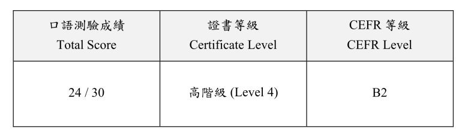
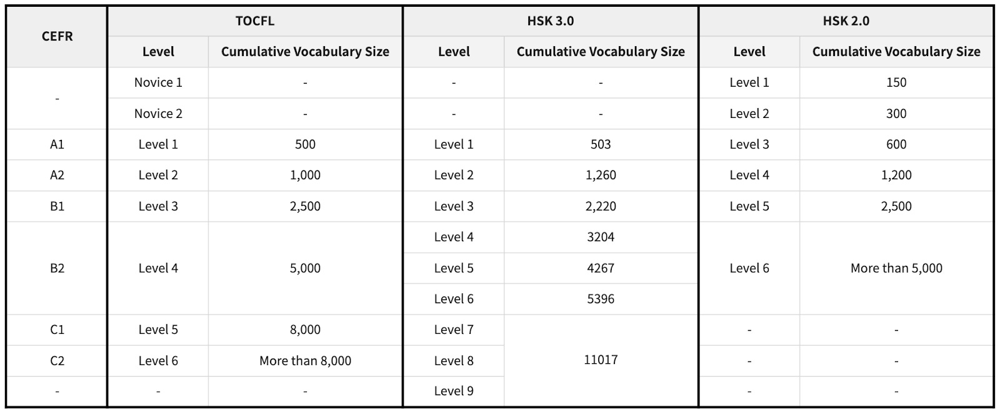

Elliott Jones
Technical Writer


Close to a decade in Taiwan and mainland China. Near-native level Mandarin Chinese fluency. Have worked for the British government in Shanghai and for many of Taiwan’s top hardware and software companies.
I Passed TOCFL Speaking Level 4 (Chinese CEFR B2)
Posted Dec 22, 2024 by Elliott Jones
{kind=link}

On November 11th, I took the TOCFL (Test of Chinese as a Foreign Language) Speaking exam.
The TOCFL is Taiwan's Mandarin Chinese proficiency exam for non-native speakers.
Unlike the Listening & Reading CAT exam, the Speaking exam is seperated into three different bands.
- Band A (Levels 1 & 2, equivelant to CEFR A1 & A2)
- Band B (Levels 3 & 4, equivelant to CEFR B1 & B2)
- Band C (Levels 5 & 6, equivelant to CEFR C1 & C2)
My exam was Band B, so the highest level I could be awarded if I did well was Level 4.
Why didn't I take Band C, despite my speaking being closer to Level 5/CEFR C1?
Well, the Band C Speaking exam requires you to read the questions yourself before responding orally, meaning you also need to have Band C level reading ability, which I do not.
The Band B exam questions are read out to you, so as long as your listening is up to Band B ability, you can answer the questions to the best of your speaking ability.
I am actively improving my reading so I can one day do the Band C Speaking exam, but I'm not ready yet.
Goal
Going into the exam, my goal was to achieve Level 4 (CEFR B2).
Below is a chart I made roughly comparing the TOCFL to HSK 3.0 and HSK 2.0.
{kind=link}

Preparation
Unlike my previous attempts at the Listening & Reading exam, I did zero intentional preparation for this exam. I knew that I should be able to pass Level 4 without much effort since in my opinion my actual level is higher than Level 4. In reality, I probably should have practiced answering some mock questions to get myself used to the format and timings, which I think would have earned me a few extra points.
In the actual exam, I found myself running out of time to finish answering the question a few times, likely costing me points. This could have easily been avoided if I had practiced the format and question timings.
The Exam
Taken from the TOCFL website, the format for the exam is as follows:

I made a few mistakes in the exam. I was probably overly casual in my responses, using a lot of slang, mistakenly using a few Hokkien words in my answers, and even using an English word once when saying "我不care", because that phrase is much more common in daily conversation in Taiwan than "我不在乎". I did correct myself after making all these mistakes though, so the impact to my overall score was likely not too bad. Importantly, I was able to give clear, coherant answers to all of the questions.
My Result
I waited over a month for my results, finally finding out that I passed on December 20th.
My score was 24 out of 30, apparently enough to be awarded Level 4. I was unable to find the scoring criteria for the Speaking exam, so I'm not sure how many points I actually needed for Level 4.


Liked This Article?
Read My Last Article
I Passed TOCFL Listening Level 4 (Chinese CEFR B2)
May 18th, 2024
On May 18th, I again took the TOCFL (Test of Chinese as a Foreign Language) Listening & Reading exam at the Chinese Culture University in Da’an, Taipei City. TOCFL is a Mandarin Chinese exam administered by the Taiwanese authorities.